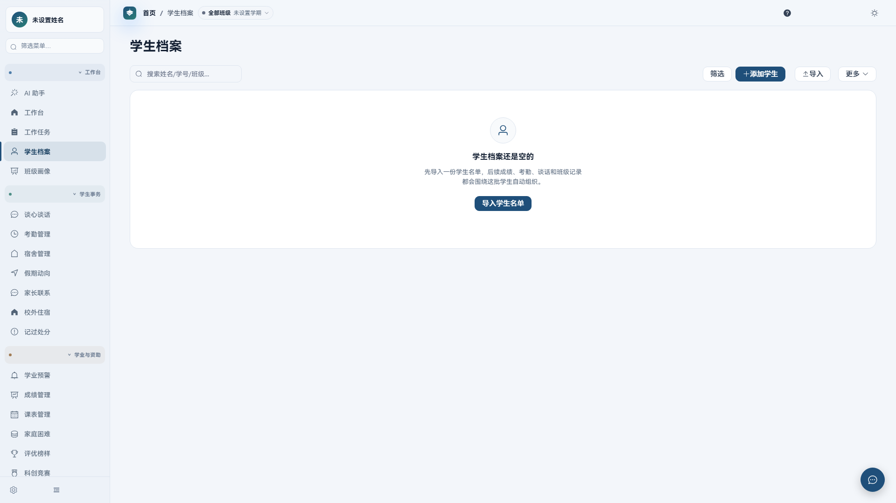
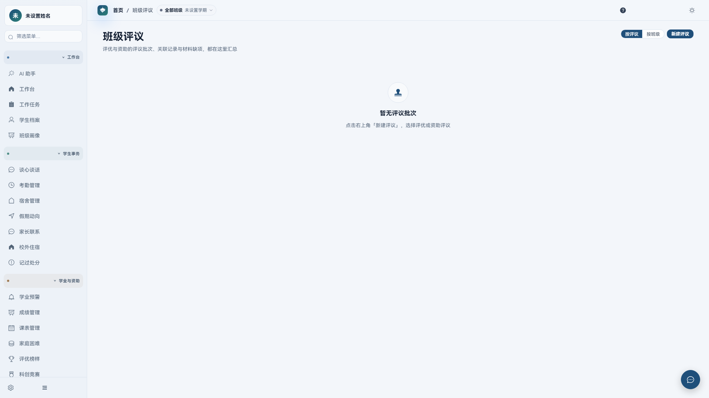
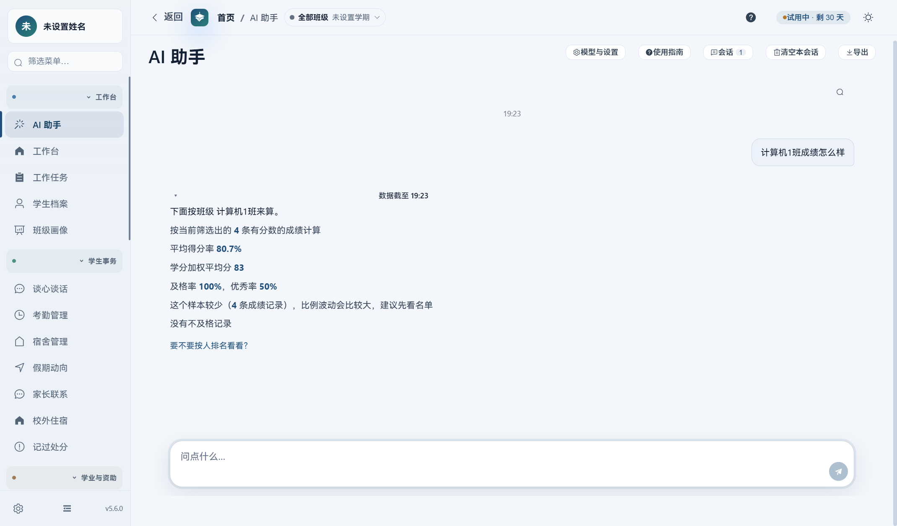

辅导员端
把多班管明白。跨班汇总、风险发现、评议审核、正式数据与材料归档，都在一个入口完成。
学生档案成绩与考勤班级评议材料归档
一套产品 · 两个角色
安装时选择辅导员端或班干部端。装后独立数据、独立更新。
把多班管明白。跨班汇总、风险发现、评议审核、正式数据与材料归档，都在一个入口完成。
把班级做清楚。一个实例只绑定一个班，负责本班记录、成员协作和 .ewclass 交接。
一条数据链
班级侧只录入一次，辅导员侧只审核一次。
卫生、请假、心理摸排与班务，在单班工作区完成。
.ewclass 只带本期新增，清单、附件与哈希一并交付。
预览、去重、处理冲突，确认后入库，整批可撤销。
产品能力
基础信息、成绩、考勤、谈话、资助与材料，围绕同一名学生组织。

按学期建立评议批次，按人追踪材料与审核状态。

本机 AI
学生数据留在本机，4B / 8B 模型按需下载。统计数字由结构化查询计算。

数据边界
核心记录、查询与备份可离线完成。局域网协作只交换增量，班级之间严格隔离。
常见问题
辅导员端管理多班与正式数据；班干部端只绑定一个班，负责本班记录、协作与交接。两端共用业务核心，但安装后独立运行、独立更新。
学生业务数据只在本机读写。AI 默认使用本机模型；局域网协作只在同一网络内交换加密增量。
安装包不内置模型。应用会检测内存并推荐 4B 或 8B 模型，模型在「本地模型」页按需下载。
下载统一安装包，安装时选择「辅导员工作平台」或「班干部工作平台」。装错后卸载重装并重新选择角色。